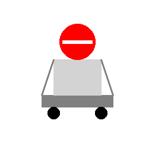
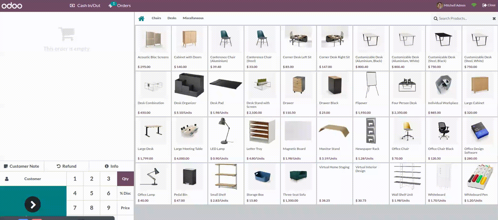

This module prevents users from processing POS orders with insufficient stock. It enhances inventory integrity and avoids overselling in retail scenarios.

1. Place the module in your Odoo custom addons folder
2. Update app list and install the module
3. Use POS as usual – the system will block negative stock orders